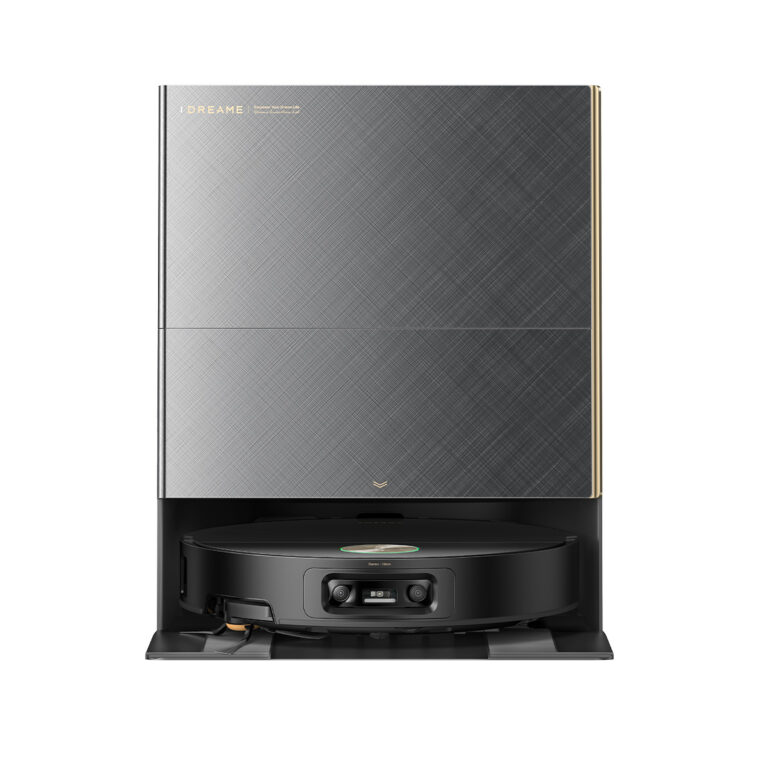
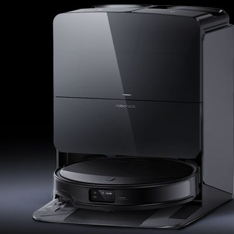

Robot Vacuum head-to-head · Updated 2026-10-04 · Based on independent reviewer consensus

$1,299-$1,699
The consensus #1 pick across 2026 roundups. Combines the strongest suction in its class with AI navigation precise enough to dodge cables and pet bowls. The all-in-one dock handles everything — emptying, hot-water mop washing, drying, refilling — with minimal owner maintenance.
Check Price on Amazon →
$1,199-$1,599
Scored a perfect 24 of 24 in Vacuum Wars obstacle-avoidance testing. The slimmest flagship body fits under furniture others cannot reach. Boiling-water mop washing is a standout hygiene feature.
🔍 Purchase link under verification
Highlighted rows show where they differ. Dimmed rows are effectively the same.
| Spec | Dreame X60 Max Ultra Complete | Roborock Saros 10R |
|---|---|---|
| Brush | Anti-tangle dual brush | — |
| Dock | Auto-empty, hot-water mop wash, dry, refill, solution dispense | — |
| NavigationDIFFERS | AI obstacle recognition (cables, shoes, toys, pet bowls) | 24/24 obstacle avoidance (Vacuum Wars protocol) |
| SuctionDIFFERS 💡 cleaning power — higher Pa = better on carpets and pet hair | 35,000Pa Vormax, highest in class | 22,000Pa HyperForce |
| Body | — | 3.14-inch slim, fits under low furniture |
| Climb | — | 57mm threshold climb |
The Dreame X60 Ultra wins on raw cleaning power with 35,000Pa suction — the highest in its class — and a more automated dock. The Roborock Saros 10R counters with a slimmer 3.14-inch body that fits under lower furniture and perfect 24/24 obstacle avoidance scores. Choose Dreame for maximum suction and hands-free maintenance; choose Roborock if low-profile design and obstacle dodging matter more.
How we compare: Specs verified against manufacturer data and retailer listings (Oct 2026). Rankings reflect consensus across independent YouTube reviewers. Our methodology
← Back to all guides